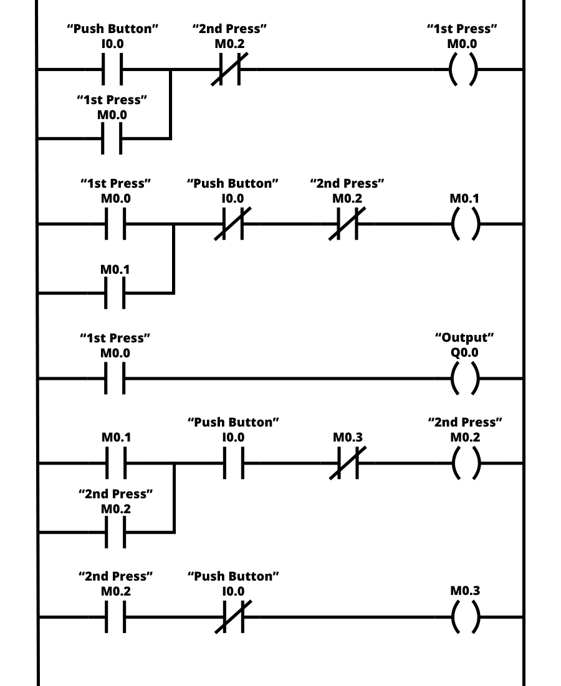
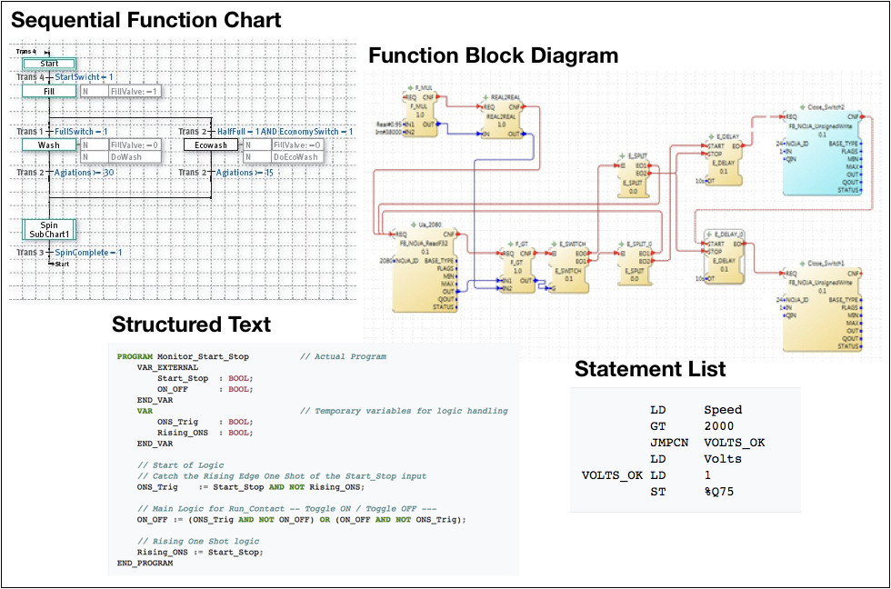
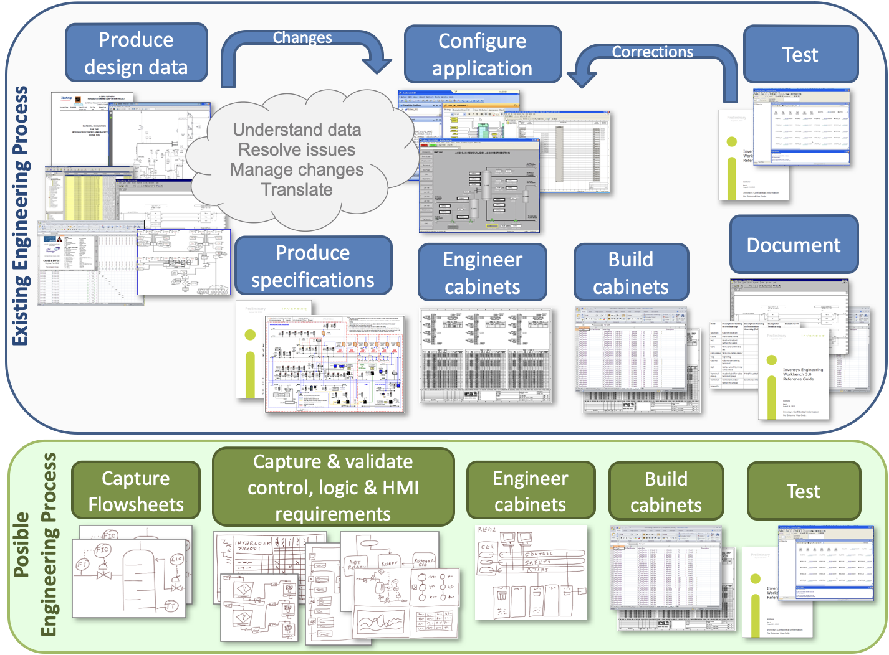

Version 0.0
In the 'Final Word' article of the September 2020 issue of Control Engineering Europe, David Breen talked of the benefits of learning ladder diagrams as a means of 'programming' PLCs. He is a software programmer and suggested that the implementers of industrial control systems need more programmers working in the field. As a process control engineer (now retired) I believe that what the industry really needs is a better toolset that enable process engineers and control and instrumentation engineers to capture their requirements and directly produce the 'code' used by PLCs and control systems.
Let us step back a little. Before digital computers were widely available for control applications, boolean logic was implemented using physical relays, wired together by technicians. State logic was possible and with the addition of timers some elementary sequential control could be managed. Indeed, this type of relay logic is still often used for safety interlocks where the cost of a programmable safety system cannot be justified or for the highest safety integrity level events. With the introduction of Programmable Logic Controllers (PLC), this relay logic was emulated so that technicians were presented with a familiar environment. Power was available on the left-hand bar and would work its way across the rungs, dependent upon the state of digital inputs, eventually driving a digital output on the right. Over time, support for analogue inputs and for PID type control was added, along with variables other than the inputs. Outputs could also be variables that could be used in other rungs. This graphical representation is good for configuring a limited set of interlocks, but, as David Breen said, it is an horrific language for implementing serious process and machine control.
PLC manufacturers continue to provide tools for the implementation and runtime viewing of ladder diagrams, but most also offer alternative tools. Control system suppliers whose market is the process industries, with more limited requirements for fast interlocking, developed alternative configuration tools. The International Electrotechnical Commission (IEC) took a pragmatic view in IEC 61131-3 where they essentially built the configuration methods from the major PLC and DCS suppliers into the standard. The standard includes the use of Ladder Diagrams, Function Block Diagrams, Structured Text and Statement List to populate the Steps and Transitions in Sequential Function Charts. Some suppliers of control systems have for decades used function blocks in an Object Oriented Programming environment, albeit with limited levels of nesting.
The problem is that, typically, a process description is translated into a Process Flow Diagram (PFD), a set of P&IDs and a collection of Control Narratives, together with an Instrument Index. Those documents, supplemented with discussions, are then translated into configurations within the control system using one or more of the notations listed above. If a process simulation is required for training and process improvements, then typically that is done as a separate work flow, again translating the PFD, P&IDs and control narratives. In practice, these multiple translation steps only occur because the overall work flow is segmented due to the nature of the supply chain, with one supplier providing one part and another supplier providing the next. My opening comment that we really need better tools is targeted at reducing the number of times that someone has to translate information from one form to another.
ISO 15926/IEC 62424 defines process data interchange and is already supported by the major process engineering tools. Information captured in data structures defined by that standard allows bi-directional exchange so that data captured in P&IDs can be used in control system configuration tools or data from the latter can be used as the starting point for P&IDs. The automated development and testing of complete systems in a virtual environment allows control systems, which are currently often on the critical path, to be engineered in parallel to the plant design and build, saving both time and cost.
With the right set of tools, 99% of the control configuration and cabinet engineering, along with a good proportion of the equipment-oriented display interface, could be generated automatically from PFDs and P&IDs. Not only that, but a 'medium fidelity' process simulation can also be produced automatically. Extra engineering effort can them be put into increasing the fidelity of the simulation and implementing particularly complex control.
Control system and PLC suppliers, particularly with the gradual reduction in hardware prices, see more and more of their revenue coming from the provision of services. They also have a lot of investment in the tools they provide to configure their devices using IEC 61131-3 style notations. Therefore collapsing the supply chain and automating the engineering process does not seem attractive. However, from an overall perspective, the fewer translations and interpretations of information that are required, the fewer the errors and changes required and the more efficient the engineering process becomes.